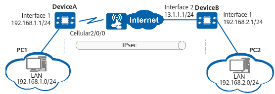

Example for Configuring the HQ to Establish an IPsec Tunnel with the Branch Using an IPsec Policy Template When a Branch Accesses the Internet Through a 4G Interface
Networking Requirements
The enterprise HQ and branch want to establish a secure IPsec connection. The HQ gateway DeviceB uses a static public IP address. The branch is small in size and its gateway DeviceA dynamically obtains an IP address from a provider through a 4G interface to access the Internet. To configure an IPsec policy on the HQ, you need to know the branch IP address. The branch IP address, however, often changes and is difficult to maintain. In this scenario, you can configure an IPsec policy template at the HQ so that the HQ can perform IPsec negotiation with the branch without knowing the branch IP address.

In this example, interface 1 and interface 2 represent 10GE 0/0/1 and 10GE 0/0/2, respectively.

Configuration Roadmap
The configuration roadmap is as follows:
- Complete basic interface configurations.
- Complete cellular-related configurations.
- Configure static routes to ensure that there are reachable routes between the HQ and branch.
- Configure an IPsec policy and apply it to a specific interface.
Procedure
- Complete basic interface configurations on DeviceA and DeviceB.
# Complete basic interface configurations on DeviceA.
<HUAWEI> system-view [HUAWEI] sysname DeviceA [DeviceA] interface 10ge 0/0/1 [DeviceA-10GE0/0/1] ip address 192.168.1.1 255.255.255.0 [DeviceA-10GE0/0/1] quit
# Complete basic interface configurations on DeviceB.
<HUAWEI> system-view [HUAWEI] sysname DeviceB [DeviceB] interface 10ge 0/0/2 [DeviceB-10GE0/0/2] ip address 13.1.1.1 255.255.255.0 [DeviceB-10GE0/0/2] quit [DeviceB] interface 10ge 0/0/1 [DeviceB-10GE0/0/1] ip address 192.168.2.1 255.255.255.0 [DeviceB-10GE0/0/1] quit
- Configure cellular functions on DeviceA.
[DeviceA] apn-profile lteprofile [DeviceA-apn-profile-lteprofile] apn ltenet [DeviceA-apn-profile-lteprofile] quit [DeviceA] interface cellular 2/0/0:1 [DeviceA-Cellular2/0/0:1] apn-profile lteprofile [DeviceA-Cellular2/0/0:1] ip address modem-alloc [DeviceA-Cellular2/0/0:1] quit
- Configure static routes on DeviceA and DeviceB.
# Configure a static route on DeviceA.
[DeviceA] ip route-static 0.0.0.0 0.0.0.0 Cellular2/0/0:1
# Configure a static route on DeviceB.
[DeviceB] ip route-static 0.0.0.0 0.0.0.0 13.1.1.2
- Configure an IPsec policy on DeviceA and DeviceB.
# Configure an IPsec policy on DeviceA.
- Configure an IPsec proposal.
[DeviceA] ipsec proposal default [DeviceA-ipsec-proposal-default] esp authentication-algorithm sha2-256 [DeviceA-ipsec-proposal-default] esp encryption-algorithm aes-256-gcm-128 [DeviceA-ipsec-proposal-default] quit
- Configure an IKE proposal.
[DeviceA] ike proposal 5 [DeviceA-ike-proposal-5] encryption-algorithm aes-gcm-256 [DeviceA-ike-proposal-5] dh group14 [DeviceA-ike-proposal-5] authentication-algorithm sha2-256 [DeviceA-ike-proposal-5] authentication-method pre-share [DeviceA-ike-proposal-5] integrity-algorithm hmac-sha2-256 [DeviceA-ike-proposal-5] prf hmac-sha2-256 [DeviceA-ike-proposal-5] quit
- Configure an IKE peer.
[DeviceA] ike peer center [DeviceA-ike-peer-center] ike-proposal 5 [DeviceA-ike-peer-center] pre-shared-key YsHsjx_202206 [DeviceA-ike-peer-center] remote-address 13.1.1.1 [DeviceA-ike-peer-center] quit
- Create an ACL rule.
[DeviceA] acl 3000 [DeviceA-acl4-advance-3000] rule 5 permit ip source 192.168.1.0 0.0.0.255 destination 192.168.2.0 0.0.0.255 [DeviceA-acl4-advance-3000] quit
- Configure an IPsec policy.
[DeviceA] ipsec policy center 1 isakmp [DeviceA-ipsec-policy-isakmp-center-1] security acl 3000 [DeviceA-ipsec-policy-isakmp-center-1] ike-peer center [DeviceA-ipsec-policy-isakmp-center-1] proposal default [DeviceA-ipsec-policy-isakmp-center-1] sa trigger-mode auto [DeviceA-ipsec-policy-isakmp-center-1] quit
By default, the negotiation for IPsec tunnel establishment is triggered by traffic. To enable automatic negotiation for IPsec tunnel establishment, run the sa trigger-mode auto command.
- Apply the IPsec policy to Cellular 2/0/0:1.
[DeviceA] interface cellular 2/0/0:1 [DeviceA-Cellular2/0/0:1] ipsec policy center [DeviceA-Cellular2/0/0:1] quit
# Configure an IPsec policy on DeviceB.
- Configure an IPsec proposal.
[DeviceB] ipsec proposal default [DeviceB-ipsec-proposal-default] esp authentication-algorithm sha2-256 [DeviceB-ipsec-proposal-default] esp encryption-algorithm aes-256-gcm-128 [DeviceB-ipsec-proposal-default] quit
- Configure an IKE proposal.
[DeviceB] ike proposal 5 [DeviceB-ike-proposal-5] encryption-algorithm aes-gcm-256 [DeviceB-ike-proposal-5] dh group14 [DeviceB-ike-proposal-5] authentication-algorithm sha2-256 [DeviceB-ike-proposal-5] authentication-method pre-share [DeviceB-ike-proposal-5] integrity-algorithm hmac-sha2-256 [DeviceB-ike-proposal-5] prf hmac-sha2-256 [DeviceB-ike-proposal-5] quit
- Configure an IKE peer.
[DeviceB] ike peer branch [DeviceB-ike-peer-branch] ike-proposal 5 [DeviceB-ike-peer-branch] pre-shared-key YsHsjx_202206 [DeviceB-ike-peer-branch] quit
- Configure an IPsec policy.
[DeviceB] ipsec policy-template temp 1 [DeviceB-ipsec-policy-template-temp-1] ike-peer branch [DeviceB-ipsec-policy-template-temp-1] proposal default [DeviceB-ipsec-policy-template-temp-1] quit [DeviceB] ipsec policy branch 1 isakmp template temp
By default, the negotiation for IPsec tunnel establishment is triggered by traffic. To enable automatic negotiation for IPsec tunnel establishment, run the sa trigger-mode auto command.
- Apply the IPsec policy to 10GE 0/0/2.
[DeviceB] interface 10ge 0/0/2 [DeviceB-10GE0/0/2] ipsec policy branch [DeviceB-10GE0/0/2] quit
- Configure an IPsec proposal.
Verifying the Configuration
# Run the display ike sa command on DeviceA and DeviceB to view SA information.
<DeviceA> display ike sa Total number of IKE SA in all CPU : 2 Total number of phase 1 SA in all CPU : 1 Total number of phase 2 SA in all CPU : 1 Flag Description: RD--READY ST--STAYALIVE RL--REPLACED FD--FADING TO--TIMEOUT HRT--HEARTBEAT LKG--LAST KNOWN GOOD SEQ NO. BCK--BACKED UP M--ACTIVE S--STANDBY A--ALONE NEG--NEGOTIATING Slot 0, cpu 0 IKE SA information : Number of IKE SA : 2, number of IKE SA1: 1, number of IKE SA2: 1 ------------------------------------------------------------------------------------------------------------------------------------ Conn-ID Peer VPN Flag(s) Phase RemoteType RemoteID ------------------------------------------------------------------------------------------------------------------------------------ 134217730 13.1.1.1/500 RD|ST|A v2:2 IP 13.1.1.1 134217729 13.1.1.1/500 RD|ST|A v2:1 IP 13.1.1.1 ------------------------------------------------------------------------------------------------------------------------------------
# The command output shows that user data transmitted between the HQ and branch is encrypted.
Configuration Scripts
#
sysname DeviceA
#
acl number 3000
rule 5 permit ip source 192.168.1.0 0.0.0.255 destination 192.168.2.0 0.0.0.255
#
interface 10GE0/0/1
ip address 192.168.1.1 255.255.255.0
#
interface Cellular2/0/0:1
apn-profile lteprofile
ipsec policy center
ip address modem-alloc
#
ip route-static 0.0.0.0 0.0.0.0 Cellular2/0/0:1
#
ike proposal 5
encryption-algorithm aes-gcm-256
dh group14
authentication-algorithm sha2-256
authentication-method pre-share
integrity-algorithm hmac-sha2-256
prf hmac-sha2-256
#
ipsec proposal default
esp authentication-algorithm sha2-256
esp encryption-algorithm aes-256-gcm-128
#
ike peer center
pre-shared-key %+%##!!!!!!!!!"!!!!"!!!!*!!!!ws~-5"e\UKKSBP(5;tb4j)5#0uZ}RA)~\EK!!!!!2jp5!!!!!!;!!!!|9Np=o;6D$bB&f<C{+)AA]~D1@`ieB:z^#T!!!!!%+%#
ike-proposal 5
remote-address 13.1.1.1
#
ipsec policy center 1 isakmp
security acl 3000
ike-peer center
proposal default
sa trigger-mode auto
#
apn-profile lteprofile
apn ltenet
#
return
# sysname DeviceB # interface 10GE0/0/1 ip address 192.168.2.1 255.255.255.0 # interface 10GE0/0/2 ip address 13.1.1.1 255.255.255.0 ipsec policy branch # ip route-static 0.0.0.0 0.0.0.0 13.1.1.2 # ike proposal 5 encryption-algorithm aes-gcm-256 dh group14 authentication-algorithm sha2-256 authentication-method pre-share integrity-algorithm hmac-sha2-256 prf hmac-sha2-256 # ipsec proposal default esp authentication-algorithm sha2-256 esp encryption-algorithm aes-256-gcm-128 # ike peer branch pre-shared-key %+%##!!!!!!!!!"!!!!"!!!!*!!!!(P<vE/l6@=^jFx!h@Uk2)Ca"+3T`VQlAjn'!!!!!2jp5!!!!!!;!!!!w#4/$OV;#2B![=F,>.}S%2o|%,(<D8r(4~T!!!!!%+%# ike-proposal 5 # ipsec policy-template temp 1 ike-peer branch proposal default # ipsec policy branch 1 isakmp template temp # return